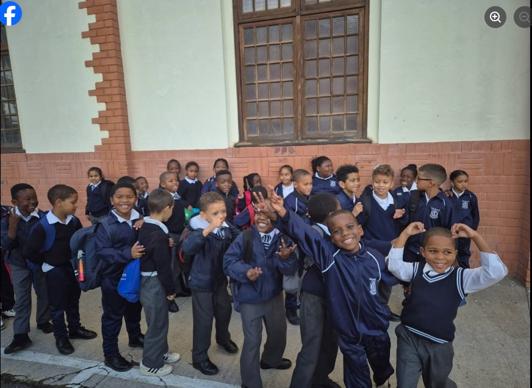
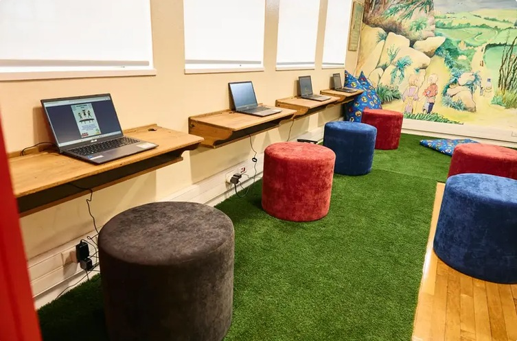

THE POWER OF A GOOD BOOK
OCTOBER 2026 · LITERACY
A renewed space for reading.
A renovated school library creates more opportunities to encourage readers and inspire a lifelong love of books.
Read the published story ↗Wisdom Builds · A community to belong.
A nurturing school community in the heart of Athlone, creating opportunities for children to read, discover and grow.

GARLANDALE THROUGH THE LENS
A glimpse into school life, learning and the community that helps Garlandale grow.


These photographs are used in this independent concept preview. Permission and attribution must be verified before official publication.
A WARM WELCOME
At Garlandale Primary, a love of learning is strengthened by people who believe in the potential of every child.
This independent redesign celebrates a school community that is investing in reading, technology and welcoming learning spaces, while making school information easier for families to access.
Our school story ↗Literacy, imagination and opportunity at the heart of the school experience.
PROGRESS WITH PURPOSE
Recent school improvements show what becomes possible when educators, families, alumni and partners work together.
A renovated school library creates more opportunities to encourage readers and inspire a lifelong love of books.
Read the published story ↗Reported improvements include interactive classroom smartboards and donated computers for the school's IT laboratory.
Alumni, sponsors and other stakeholders have helped improve school spaces and strengthen the learning environment.
Stories above reflect published reporting and concept framing, not new announcements from Garlandale Primary School.
DESIGNED FOR FAMILIES
FAMILY-FRIENDLY INFORMATION
In a full website, important resources can be grouped into simple, easy-to-find sections rather than scattered across pages.
Clear information about phases, learning areas and classroom support.
A single home for notices, upcoming activities and important dates.
Helpful guidance, contact information and downloadable forms.
A proposed staff dashboard to manage updates without coding knowledge.
These are proposed features for a future full website. This public version remains a concept demonstration.
A COMMUNITY THAT CARES
Great schools grow through the dedication of staff and the support of their communities. Garlandale’s reported facility upgrades are an example of that collective commitment.
Connect with our school ↗STAY CONNECTED
Looking for school information? The contact details below are from Garlandale Primary School's existing public website.